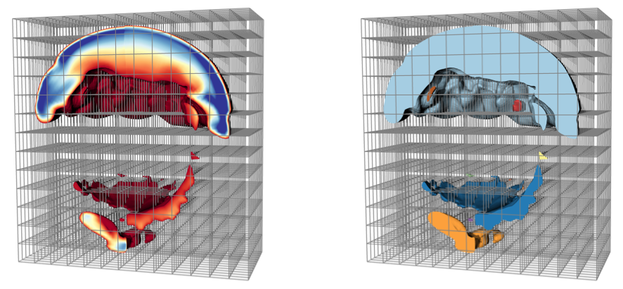

|
Parallel Connected Components  Problem OverviewParallel scientific simulations running on today's state of the art petascale computing platforms generate massive quantities of high resolution mesh-based data. Scientists often analyze this data by eliminating portions and visualizing what remains, through operations such as isosurfacing, selecting certain materials and discarding the others, isolating hot spots, etc. These approaches can generate complex derived geometry with intricate structures that require further techniques for effective analysis, especially in the context of massive data. In these instances, representations of the topological structure of a mesh is often helpful. Specifically, a labeling of the connected components in a mesh provides a simple and intuitive topological characterization of which parts of the mesh are connected to each other. These unique sub-meshes contain a subset of cells that are directly or indirectly connected via series of cell abutments. The global nature of connectivity poses a challenge in distributed-memory parallel environments, which are the most common setting for analyzing massive data. This is because massive data sets are typically too large to fit into the memory of a single processor, so pieces of the mesh are distributed across processors. Cells comprising connected sub-meshes may span any of the processors, but the relationships of how cells abut across processors frequently has to be derived. To deal with this problem, sophisticated techniques to resolve connectivity are necessary. ResultsWe have published several papers on this topic:
CDUX PeopleExternal Collaborators
Publications
|